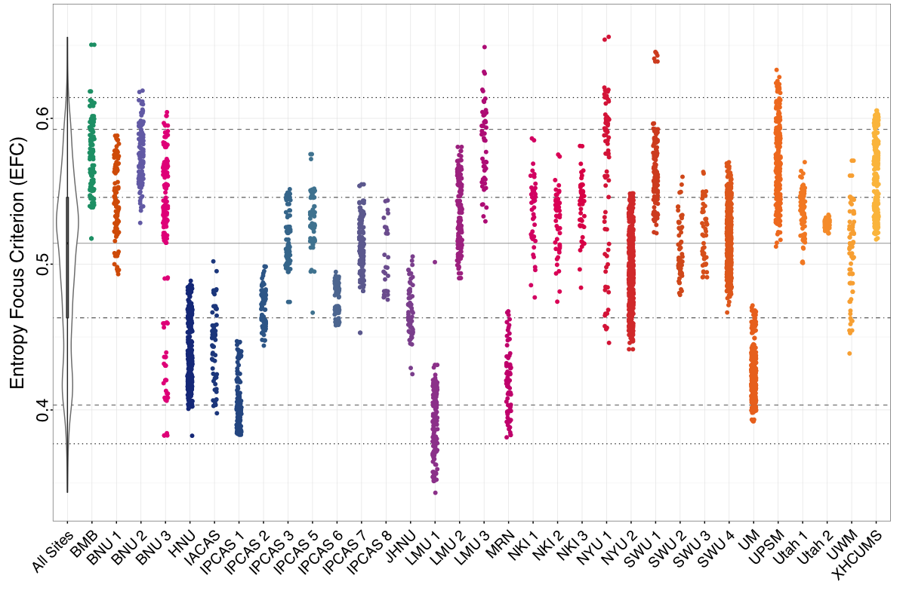
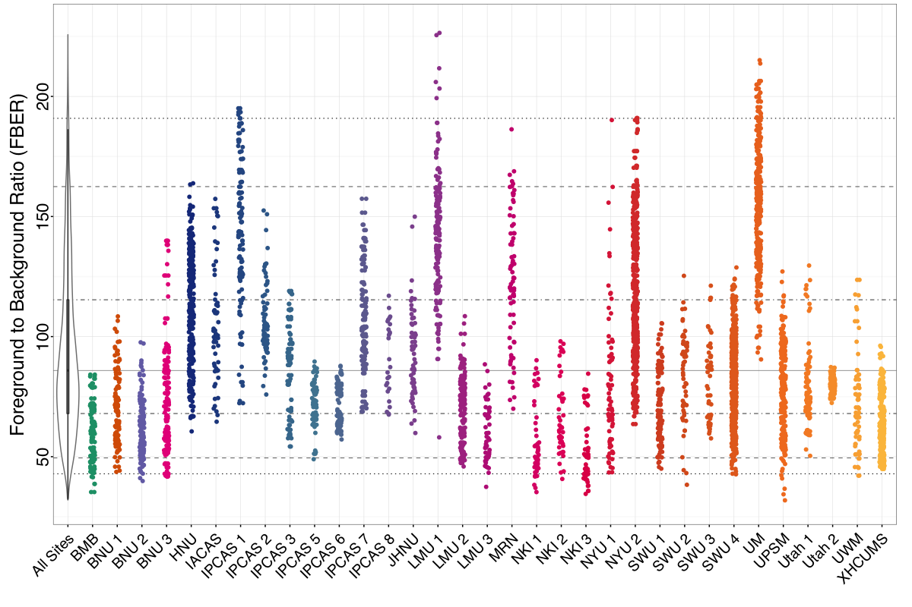
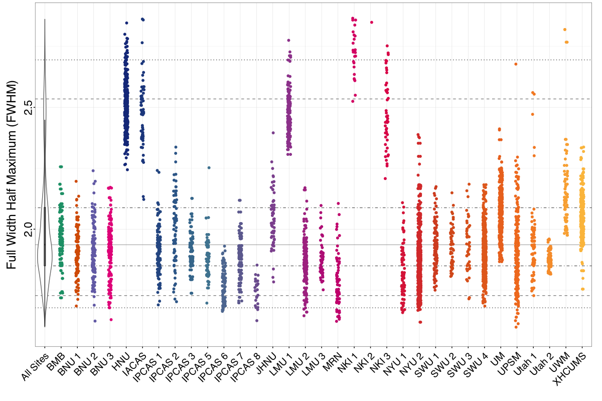
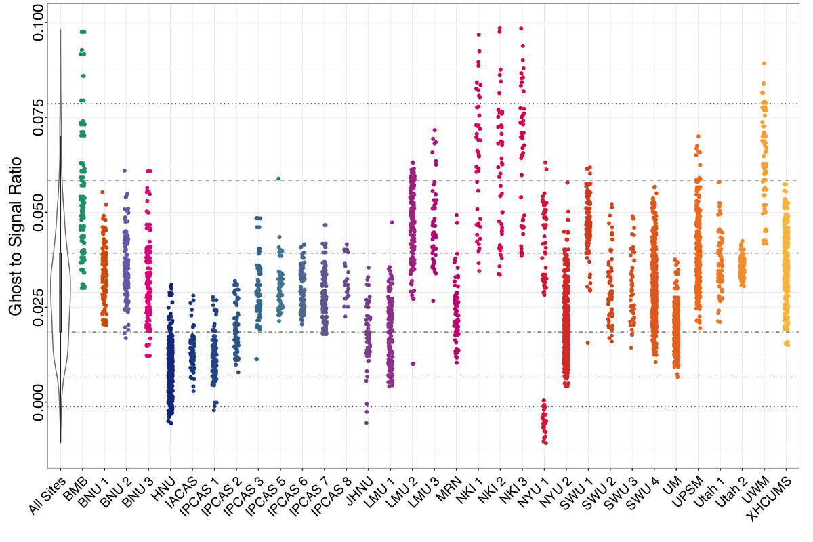
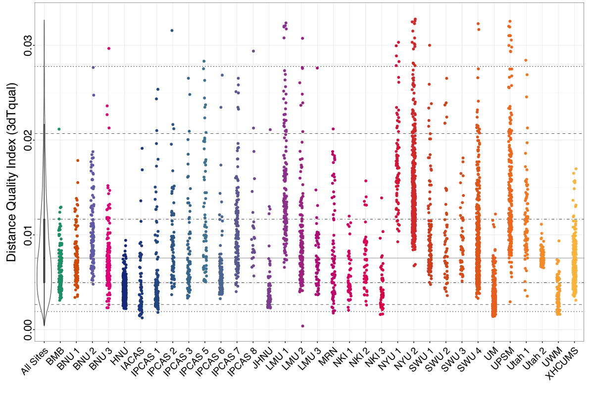
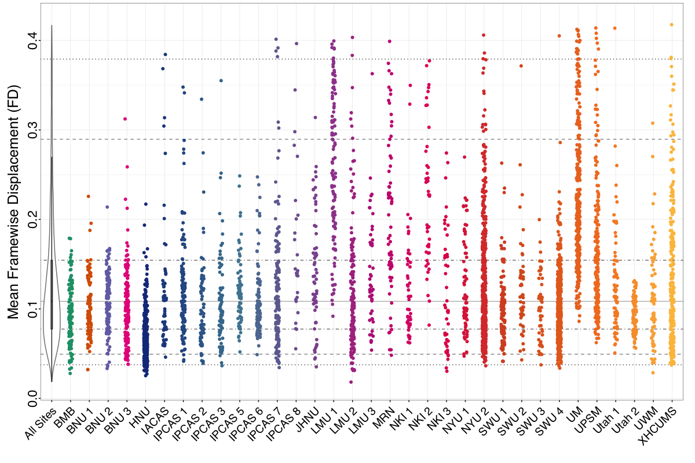
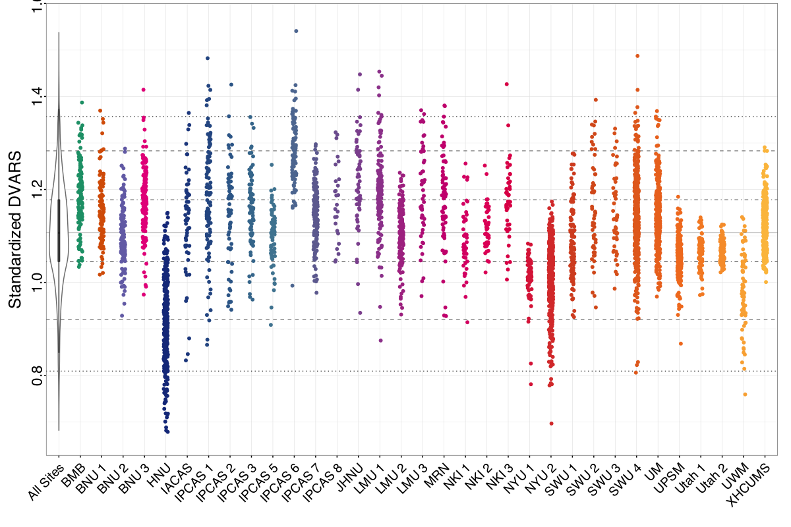
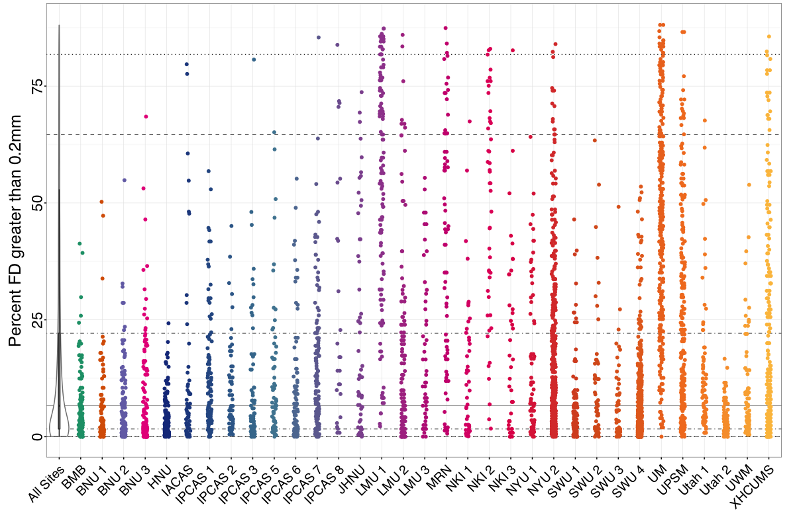

Quality Control: Functional Images¶
Spatial and Temporal Metrics¶
Entropy Focus Criterion (EFC)
Foreground:Background Energy Ratio (FBER)
Spatial Smoothness (FWHM)
Ghost-to-Signal Ratio
Distance Quality Index (3dTqual)
Head Motion¶
Mean Framewise Displacement (Mean FD)
Standardized DVARS
Percent of Volumes with FD Greater Than 0.2mm
